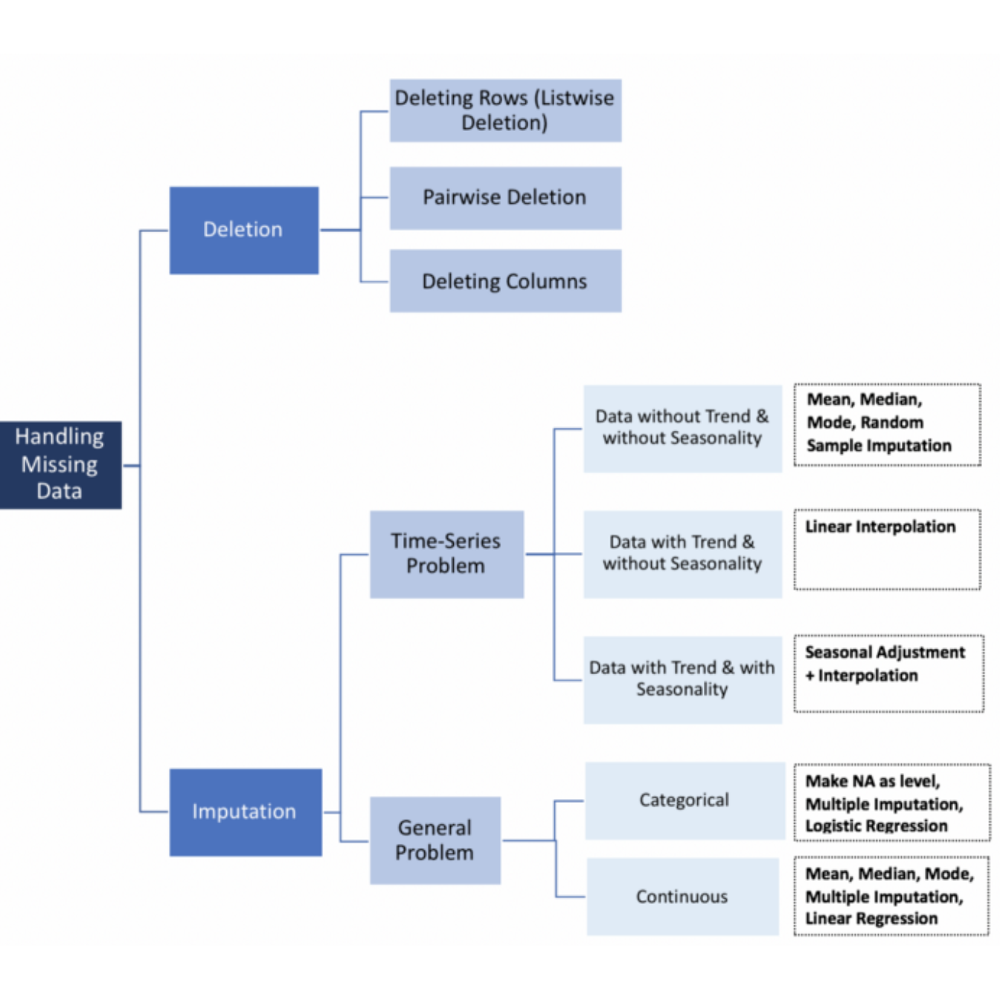

Datos experimentales (Datos fuertes): El investigador tuvo control en la generación de los datos. Definió apriori cuales variables eran dependientes y cuales independendientes y además controló los niveles de estas variables.
Datos observacionales (Datos débiles): Este tipo de datos aparecen con mucha frecuencia en el trabajo aplicado. Un banco no puede controlar el tipo de clientes que llegan, por ejemplo. No tenemos control en las estadísticas oficiales. No controlamos a veces cosas tan simples como las definiciones de las variables.
Datos cuasi-experimentales: El investigador puede llegar a tener cierto nivel de control, por ejemplo en estudios médicos con pacientes el investigador puede controlar variables tales como dosis, tipo tratamiento, pero no puede decidir sobre quien será el paciente.
##Qué Hacer Cuando Tenemos Datos faltantes?
En muchas ocasiones cuando estamos analizando una base de datos nos enfrentamos con la falta de datos.
Esta pérdida de información puede generar problemas, a veces grandes, en especial cuando no tenemos claridad sobre las razones sobre el porqué se perdieron estos datos.
Dependiendo del tipo de análisis que pretendamos realizar, la importancia de los valores perdidos puede variar desde extrema hasta ninguna.
Cabe anotar la diferencia entre una unidad muestral con no respuesta y una unidad con no respuesta parcial.
El primer paso en nuestro análisis es determinar el origen del dato faltante. La falta de un dato puede deberse a múltiples razones, por ejemplo, una no respuesta a una pregunta delicada en un cuestionario, a un mal registro por parte del encuestador, una pérdida aleatoria de información, etc.
##Tipos de datos perdidos
Datos Perdidos Completamente y al Azar (MCAR missing completely at random):
Datos Faltantes al Azar (MAR Missing at Random)
Datos Faltantes NO al Azar (NMAR missing not at random)
Su ausencia no se debe a la presencia de las variables en el estudio. ejm: la tendencia que tienen ciertos segmentos poblacionales a no dar respuesta a encuestas.
Las causas de la pérdida de información se debe principalmente al azar y a la censura algunas formas de trabajar con datos faltantes son las siguientes
Ignorar los Datos faltantes
Eliminar un sujeto con una o más variables no observadas Es la estrategia más popular. Es recomendable cuando la fracción de datos faltantes es muy pequeña, los estadísticos son obtenidos a partir de la misma matriz de datos.
Imputación de datos La imputación es la sustitución de valores no informados en una observación por otros, Existen diversas técnicas de imputación.
Algunas ventajas de la imputación son:
Se resuelve desde el comienzo el problema
No se descarta información
Permite utilizar procedimientos y software para datos completos.

Los siguientes datos son los resultados de la calificación de 9 jurados a las reinas de un concurso de belleza
Realice un análisis descriptivo de estos datos, tenga en cuenta la presencia de datos faltantes y su tratamiento, tenga en cuenta los siguientes aspectos
Qué metodo propone para los datos faltantes
Realice un boxplot para cada reina, quien obtuvo mejor calificación
Realice un boxplot para cada jurado, quien dio mejores calificaciones
Encuentre el vector de medias y de la desviación estándar
Son aquellas observaciones que parecen haberse generado de forma distinta al resto de los datos. Pueden ser causadas por errores de medición o transcripción, cambios en el instrumento de medición o a heterogeneidad intrínseca de los elementos observados.
Ejemplo Supongamos que estamos estudiando las características de las viviendas en una zona urbana donde la gran mayoría son pisos, pero se ha incluido en la muestra una gran vivienda unifamiliar con jardín. Esta observación será atípica y corresponde a una heterogeneidad real de los datos.
Las observaciones atípicas se deben detectar ya que obtendremos una mejor descripción de los datos separandolos del resto de los datos,ya que pueden distorsionar las medias y desviaciones típicas de las variables y destruir las relaciones existentes entre ellas.
Cuando existe más de un atípico en los datos, puede producirse el efecto conocido como enmascaramiento, que consiste en que observaciones atípicas similares se ocultan entre sí.
¿Cómo tratar a los puntos atípicos?
Utilizar estimadores robustos, diseñados para verse poco afectados por la contaminación de atípicos.
La detección de puntos atípicos para eliminarlos y trabajar con las muestras limpias de atípicos.
El procedimiento para detectar grupos de atípicos es eliminar de la muestra todos los puntos sospechosos, de manera que evitemos el enmascaramiento y podamos calcular el vector de medias y la matriz de covarianzas sin distorsiones.
El primer paso para identificar las observaciones sospechosas es detectar aquellas que lo sean claramente respecto a una variable. Para ello podemos utilizar el histograma o los diagramas de caja. Una regla simple y automática es considerar sospechosas aquellas observaciones tales que:
\[\frac{x_i-med(x)}{meda(x)}>4.5\] Donde med(x) es la mediana de las observaciones, que es un estimador robusto del centro de los datos, y Meda(x) es la mediana de las desviaciones absolutas |xi − med(x)|, que es una medida robusta de la dispersión. Este método puede verse como una estandarización robusta de los datos.
Si el número de variables no es muy grande, los diagramas de dispersión pueden ayudar visualmente a determinar datos atípicos en dos dimensiones. .